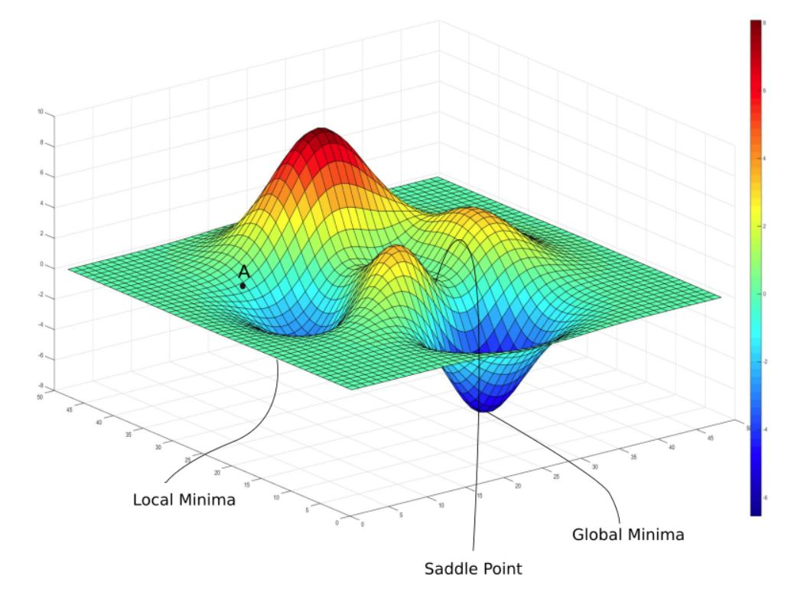
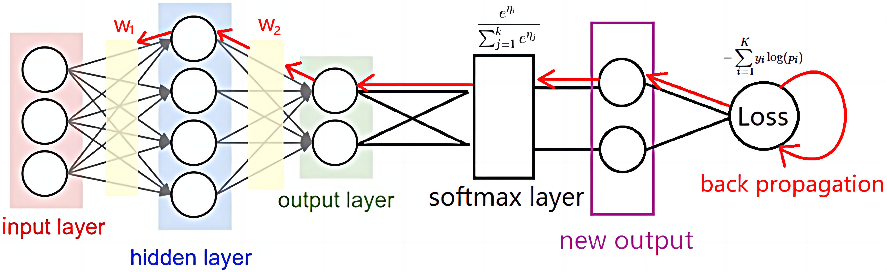

反向传播
前言
横看成岭侧成峰，远近高低各不同。不识庐山真面目，只缘身在此山中。
上一次我们谈到了求解线性方程，这个事情早在小学的鸡兔同笼上我们就已经在学习了，可是我们但是关注的是怎么“得到方程组的解”，也就是怎么从“头和脚的数量得到鸡和兔的数量”：
$$
\begin{bmatrix}
a_{11} & a_{12} \
a_{21} & a_{22}
\end{bmatrix}
\begin{bmatrix}
x_{1} \
x_{2}
\end{bmatrix}
=\begin{bmatrix}
b_{1} \
b_{2}
\end{bmatrix}
$$
上面方程组的矩阵形式的表达就是：
$$
\mathbf{A}\mathbf{x} = \mathbf{b}
$$
当时，我们已知的是$\mathbf{A}$和$\mathbf{b}$需要得到的是$\mathbf{x}$。
但是，当我们学习线性代数的时候，我们会发现这里的$\mathbf{A}$的性质才是我们真正关心的。也就是说，一个线性空间是如何映射到另一个线性空间的过程是我们正常关心的问题，而不是原空间和映射后空间中的几个点的性质。
和上一节相比，我们这一节也需要类似的思想上的转变。
关注参数
在上一节中，我们实现了使用张量的语言对最简单的神经网络——多层感知机（MLP）的描述：$\mathbf{\vec{y^0}} \in \mathbb{R}^m = \mathbb{f}(\mathbf{\vec{x^0}} \in \mathbb{R}^n) = sigmoid^i(fc^i(\mathbf{\vec{x^0}} ))=sigmoid^i(\mathbf{W^i}\cdot(\mathbf{\vec{x^0}}) + \mathbf{b^i})$。
上一节已经说过了，这里的sigmoid函数是$\sigma(x) = \frac{1}{1 + \mathrm{e}^{-x}}$，它的一起都是确定的所以，上面的MLP还可以换一种表达，也就是$\mathbf{\vec{y^0}} \in \mathbb{R}^m = \mathbb{g}(\mathbf{\vec{x^0}}, \mathbf{W, b}), \mathbf{\vec{x^0}} \in \mathbb{R}^n$。这里的$W,b$都是需要学习的参数，这里可以把它们统称为$\theta$。
所以，上面的表示的最简洁形式就是$\hat{Y} = F(X, \theta), \hat{Y} \in R^{(s,m)}, X \in R^{(s, n)}$。这里的$F$表示一种隐函数，这种函数没有显式的表达形式，在神经网络的语言下，它是人类的抽象思维，神经网络就要要学习这样的一个函数；这里的$s$是数据库中的数据的数量，$n$是输入的维度，$m$是输出的维度。
对一个神经网络来说，它的输入和输出，也就是$X$和$\hat{Y}$，都是确定的，它需要做的就是学习一个合适的$\theta$。
综上，这一节，我们需要关注的就是这里的$\theta$!
合适的度量
上面我们提到了合适的$\theta$，那么要如何量化这里的“合适”？
熵与信息熵
刑不可知，威不可测。
信息也是这样，知道的越多，信息就越有序，它的“威”就是可以预测的；知道的越少，信息就越混乱，它就是不可测的“刑”。
虽然“熵”的概念是西方人提出的，但是东方的政治家似乎很早就意识到信息熵中的力量 。。。
- 熵是一个物理学概念，它表示一个系统的不确定性程度，也就是一个系统的混乱程度。
- 信息熵：香农将熵引入信息论中，用来衡量信息的不确定性
- 二者是同样的内涵在不同的领域的应用
信息熵
性质
- 越不可能发生的事情，信息量越大；反之，必定会发生的事，信息为0
- 信息量越大，信息熵也越大
- 几个独立事件同时发生的信息量=每一个事件的信息量之和
定义
首先，使用对数函数来定义信息量，其中$P(x)$为事件发生的概率：
$$
I(x) = -log(P(x))
$$
这里我们看看$I(x)$是不是符合上面的性质的要求：
- 当一件事情必然发生时，$P(x)=1$，对应的$I(x)=0$，就是没有信息量
- 当一件事不可能发生时，$P(x)=0$，对应的$I(x)=+\infty$，也就是信息量很大
- 当有n件独立事件
- 它们发生的概率是$P(x_i)$， 各自的信息熵是$I(x_i)=-log(P(x_i))$
- 同时发生的概率是$\prod_{i=0}^nP(x_i)$
- 同时发生的信息熵是$I(x)=-log(\prod_{i=0}^nP(x_i))=-(\Sigma_{i=0}^nP(x_i))=\Sigma_{i=0}^n I(x_i)$
所以这样定义的信息量是满足要求的。
然后，定义信息熵为满足概率分布$P$的事件所产生的期望信息量：$H(P)=E_{X\sim P}[I(x)]=-E_{X\sim P}[logP(x)]=-\Sigma_iP(x_i)log(P(x_i))$。显然的，$H(P)$和$I(x)$是满足性质2的。
综上，我们得到了信息熵的定义，也知道信息熵可以作为分布的度量。
KL散度
一个神经网络，可以看作一个映射，就是有点复杂🧠，其功能是把一个输入空间映射到一个预测空间，对应这个输入空间我们还有一个标签空间也就是真实空间。
显然我们希望自己的预测空间和真实空间越像越好，那么有没有什么办法，衡量这两个空间是不是“相似”呢？答案是显然的，只要看一看上面的关于熵的讨论，我们就能意识到，所谓空间其实就是规定了$X\sim P(X)$，所以事实上我们是可以使用概率分布来描述一个空间的分布。那么既然可以使用熵来描述一个空间本身的分布，自然就可以使用类似的概念来描述两个空间之间的分布的差异。
而相对熵，也就是KL散度，就可以衡量两个概率分布之间的近似程度。类似于熵，相对熵在两个分布十分相近的时候处于一个很小的值。
下面的时对KL散度的定义，假设我们有两个概率分布，原始分布$P$与近似分布$Q$，然后得到：
$$
\begin{cases}
KL(P||Q)=\Sigma_i P(x_i)log(\frac{P(x_i)}{Q(x_i)}) —— \small{离散状态} \
KL(P||Q)=\int p(x)\frac{p(x)}{q(x)}——连续状态
\end{cases}
$$
对应的可以写成期望的形式：$KL(P||Q)=\mathbb{E}[log(p(x))-log(q(x))]$
从这个定义中就可以看出，当原始分布和近似分布完全一致时，KL散度就为0；而其期望的形式也能解释为原始分布和近似分布之间对数之差的期望
交叉熵
显然，使用KL散度作为衡量两个分布之间的指标已经是一个很好的选择，但是如果能把它再简化简化又何乐而不为呢？
$$
\begin{align*}
KL(P||Q) &= \sum_i P(x_i) \log\left(\frac{P(x_i)}{Q(x_i)}\right) \
&= \sum_i \left(P(x_i) \log(P(x_i)) - P(x_i) \log(Q(x_i))\right) \
&= -H(P) - \sum_i P(x_i) \log(Q(x_i))
\end{align*}
$$
这里，我们发现$-H(P)$是由原始分布，这一项在深度学习中是由提供的数据集决定的，也就是一个定值；而后一项才决定了KL散度，所以，我们可以只计算后一项$-\Sigma_iP(x_i)log(Q(x_i))$，我们称这一项为交叉熵。
这里给出交叉熵的定义：对于两个分布$P$和$Q$，其中$P$是真实分布，$Q$是预测分布/近似分布，我们可以定义交叉熵为：
$$
H(P,Q)=-E_{X\sim P}[logQ(x)]=-\Sigma_iP(x_i)log(Q(x_i))
$$
这样，我们确定了信息熵($H(P)$)，相对熵/KL散度($KL(P||Q)$)和交叉熵($H(P,Q)$)之间的关系:
$$
KL(P||Q) = -H(P) + H(P,Q)
$$当原始分布P保持不变时，最小化KL散度等价于最小化交叉熵， 而交叉熵常作为机器学习的损失函数！
交叉熵与模型参数
好叭，我们上面谈了一些数学上的问题，并且引出了一个重要的概念交叉熵，可是这个交叉熵和我们的模型有什么关系呢？
$$
H(P,Q)=-E_{X\sim P}[logQ(x)]=-\Sigma_iP(x_i)log(Q(x_i))
$$
这里的$Q$是近似分布，而我们前文也提到了一个神经网络的最简洁的形式是：$\hat{Y} = F(X, \theta), \hat{Y} \in R^{(s,m)}, X \in R^{(s, n)}$。
那么，事情就变得明了了，因为这里的$\hat Y$和$Q$是等价的，它们都是模型（也就是神经网络）预测的分布。那么，就会有$H(P,Q)=H(P,\hat{Y})=\mathbb{H}(P, \theta, X)$，这里的$X$完全由输入数据库本身决定，和$P$一样，所以可以进一步得到$H(P,Q)=\mathfrak{H}(\theta)$。
也就是说交叉熵仅仅和模型中参数有关！！
为了简单起见，后文的$\mathfrak{H}(\theta)$就写作$loss(\theta)$，也即是损失函数。因为在深度学习中根据任务的不同会使用不同形式的损失函数，但是交叉熵是最常见的损失函数，所以我们这里就是以交叉熵作为一个示例来说明。
优化损失函数
优化的对象
在上文的一顿推导后，我们得到了一个指标$loss$——损失函数，这个指标仅仅和模型的参数也就是$\theta$有关，但是可以很好的反应预测空间和真实空间之间的差异，并且有着明确的相关，也就是$loss$越小，两个空间之间的差异越小。这样一来，我们在一开始提出的问题就具体化为：寻找一个$\theta^*$使$loss(\theta)$尽可能的小。
这里我不太确定为啥叫“损失函数”，明明是“损失熵”更合理？我觉得可能是因为这个“熵”是和$\theta$相关的，当$\theta$改变的时候表现的像一个函数，所以叫做“损失函数”
注意，虽然我们是期待有一个唯一的$\theta^*$可以实现这样的效果，但是到底有没有、是不是一个，似乎还是不是很确定。但是这对我们的操作的影响不大，只要我们能在一个确定的输入分布（对应某一个数据集）下得到一个好的$\hat{\theta}$就可以了！
好叭，正如上一节说的，一个模型中会有很多的参数，而且模型一开始都是随机初始化得到的$\theta_{init}$，所以获得我们需要的那个$\hat{\theta}$并不是一件容易的事情。幸运的是，梯度优化可以帮我们实现这一点。
虽然初始化参数也是有相应的方法，但是这里先不做讨论。
梯度优化
简单的说，我们是通过梯度优化逐步得到期待的$\hat \theta$的：
$$
\theta_t = \theta_{t-1} - \mu \cdot \nabla loss(\theta_{t-1})
$$
我想这里应该是比较好理解的，应该是在多元函数的微分那个部分有证明函数的梯度指向的是函数下降的方向，那么根据$loss(\theta)$的梯度$\nabla loss(\theta)$优化$\theta$自然就是一个好的选择。
这里的$\mu$是学习率，也就是一次优化参数变化的步长。
为了直观的说明如何通过梯度下降的方法从初始化的$\theta_{init}$得到期待的$\hat \theta$，我们这里不妨先考虑一个“理想模型”，这里模型中只有两个参数$\theta_1$和$\theta_2$，对应的$loss$就是一个二元函数，如下图：

显然,这里的$loss$就是完全由参数$\theta_1$和$\theta_2$决定的.
这里给出了几种不同的梯度优化的方法，但是我们可以先不考虑它们具体是怎么操作的，知道它们都是依赖于$\nabla loss(\theta)$就可以了。

链式法则

上文中，我们说明了，实现参数优化的方法是梯度优化，而梯度优化中必不可少的操作就是计算函数的梯度也就是$\nabla loss(\theta)$。
但是，这样的计算并不是一件容易的事情，在多层感知器（MLP）中，损失函数通常在输出层计算，然后通过反向传播算法将误差逐层传递回去。假设我们有一个三层的MLP，损失函数 $ L $ 通常是输出层的预测值 $ \hat{y} $ 与真实值 $ y $ 之间的差异。损失函数的一个常见形式是均方误差（MSE）：
$ L = \frac{1}{2}(\hat{y} - y)^2 $
为了展示反向传播和链式法则，我们需要计算损失函数 $ L $ 对每个权重 $ w $ 和偏置 $ b $ 的偏导数。以下是三层MLP中损失函数对第一层权重 $ w^{(1)} $ 和偏置 $ b^{(1)} $ 的偏导数的一般形式：
$ \frac{\partial L}{\partial w^{(1)}} = \frac{\partial L}{\partial z^{(2)}} \cdot \frac{\partial z^{(2)}}{\partial a^{(2)}} \cdot \frac{\partial a^{(2)}}{\partial z^{(1)}} \cdot \frac{\partial z^{(1)}}{\partial w^{(1)}} $
$ \frac{\partial L}{\partial b^{(1)}} = \frac{\partial L}{\partial z^{(2)}} \cdot \frac{\partial z^{(2)}}{\partial a^{(2)}} \cdot \frac{\partial a^{(2)}}{\partial z^{(1)}} \cdot \frac{\partial z^{(1)}}{\partial b^{(1)}} $
其中：
- $ z^{(1)} = w^{(1)} \cdot x + b^{(1)} $ 是第一层的输入加权和加上偏置。
- $ a^{(1)} = \sigma(z^{(1)}) $ 是第一层的激活函数输出。
- $ z^{(2)} = w^{(2)} \cdot a^{(1)} + b^{(2)} $ 是第二层的输入。
- $ a^{(2)} = \sigma(z^{(2)}) $ 是第二层的激活函数输出。
- $ \hat{y} = w^{(3)} \cdot a^{(2)} + b^{(3)} $ 是最终的预测值。
- $ \sigma $ 是激活函数，比如 sigmoid 或 ReLU。
pytorch是现在最流行的DL的框架，在pytorch中，$\nabla loss(\theta^i_t)$也即是某一个时间步中的某一个参数的梯度就是通过这样的反向传播的方法计算得到的，并且以$(\theta_t^i, \nabla loss(\theta^i_t))$的形式加以保持，这样会增加显存的开销，但是可以减少计算的时间。
小结
在这一节中，我们分析了如何得到模型的“合适的参数”。我们首先通过交叉熵量化模型的参数的“合适的程度”，然后使用梯度优化的方法，不断的调整$\theta_{init}$使之不断的接近目标$\hat \theta$。为了实现这样的梯度优化，我们需要高效的计算$\nabla loss(\theta^i_t)$，而这个任务在链式法则的保证下可以正常的进行。
我们还没有讲梯度优化的具体算法有那些，也没有讲学习率要怎么调节，这些问题讲起来也要花上很久的时间，这里先按下不表。
总而言之，通过这两节，我们大概就说清楚了一个神经网络的forward和backward的操作思路，至于剩下的细小的方法会慢慢补完，敬请期待！🥳